Candidate List 20261008Last night — ZTF: 3,984 passed basic cuts (82 young) · LSST: 0 passed basic cuts (0 young)Previous Day Next Day
Section 1: New Sources (age<1d) Section 2: Old (1-5d) sources observed last nightplaceholder
Section 1: New Afterglow/FBOT Cands Last Night (1)
1. [ZTF] ZTF26acaezkn (Afterglow?FBOT?) [Back to Top] [Share] [Trigger Swift] [Fritz Alert] [Fritz Source] [Lasair]RA, Dec: 291.59648, 46.17758 19h26m23.16s, 46d10m39.29sGalactic (l, b): 78.16896, 13.61399 ext(g-r) = 0.114


TESS: Sectors [ 14 15 40 41 54 55 74 75 81 82 119 120]
PS1: 1 source in 3 arcsec Closest: d = 1.25 arcsec photoz=0.42+/-0.02 peak abs mag = -23.01
LegacySurvey: 0 sources in 3 arcsec

Extinction-corrected gr color:
From alerts: -0.04 +/- 0.14 mag
Consistent with synchrotron, g-r>0!
Rise Rate:
g: 1.41 mag/day
r: 0.56 mag/day
Fade Rate:
Section 2: Older Sources Observed Last Night (20)
0. [ZTF] ZTF26abyukgq (Afterglow?) [Back to Top] [Share] [Trigger Swift] [Fritz Alert] [Fritz Source] [Lasair]RA, Dec: 36.86998, 17.65749 2h27m28.79s, 17d39m26.96sGalactic (l, b): 153.10698, -39.52125 WARNING: 2.92 deg from ecliptic plane ext(g-r) = 0.338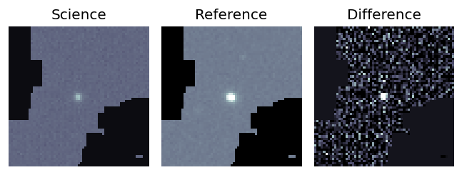
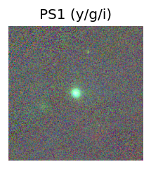
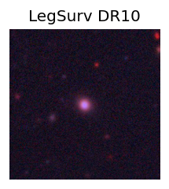
TESS: Sectors [42 70 71]
PS1: 0 sources in 3 arcsec
LegacySurvey: 1 sources in 3 arcsec Closest: d = 0.52 arcsec, 156.6 deg (east of north) photoz=0.03 (68% bounds 0.03, 0.05), type=REX peak abs mag (ext. corrected) = -17.17 (68% bounds -16.6, -18.22)
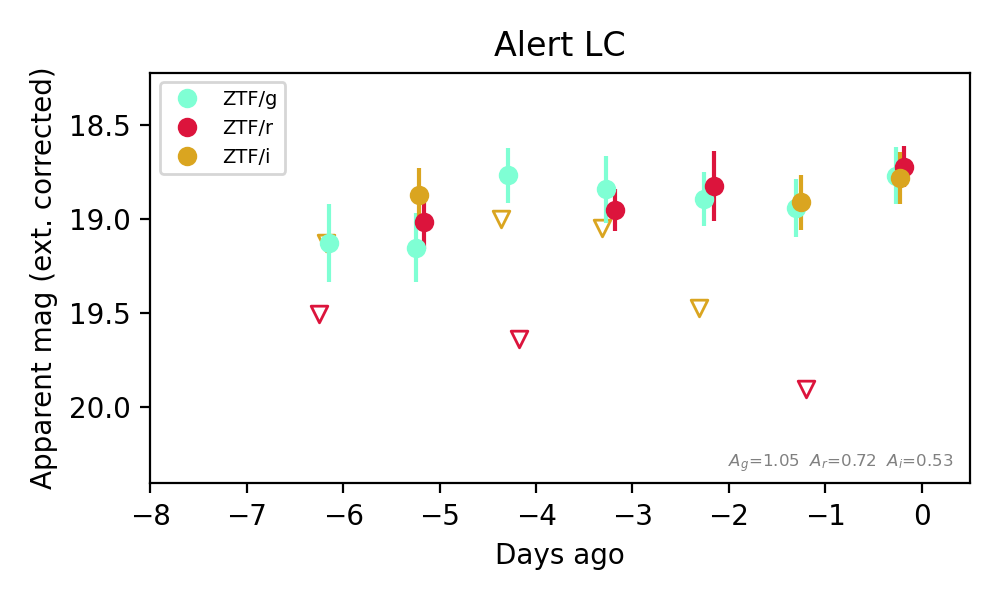
Extinction-corrected gr color:
From alerts: -0.68 +/- 99 mag
Extinction-corrected gi color:
From alerts: 0.22 +/- 0.22 mag
Extinction-corrected ri color:
From alerts: 0.9 +/- 99 mag
Consistent with synchrotron, g-r>0!
Rise Rate:
r: 1.16 mag/day
i: 0.54 mag/day
Fade Rate:
r: 1.14 mag/day
i: 0.21 mag/day
1. [ZTF] ZTF26abyoulj (Afterglow?FBOT?) [Back to Top] [Share] [Trigger Swift] [Fritz Alert] [Fritz Source] [Lasair]RA, Dec: 140.02098, 27.05327 9h20m5.04s, 27d 3m11.77sGalactic (l, b): 200.26794, 43.3282 ext(g-r) = 0.034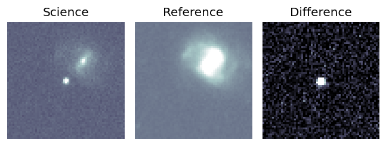
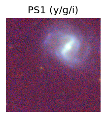
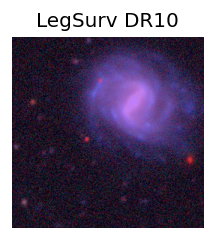
TESS: Sectors [21 44 45 46 48 72]
SDSS (<15 kpc):Found SDSS phot-z: z=0.54; peak abs mag = -26.09
PS1: 0 sources in 3 arcsec
LegacySurvey: 1 sources in 3 arcsec Closest: d = 7.97 arcsec, 109.1 deg (east of north) photoz=0.05 (68% bounds 0.03, 0.28), type=PSF peak abs mag (ext. corrected) = -20.25 (68% bounds -18.96, -24.37)
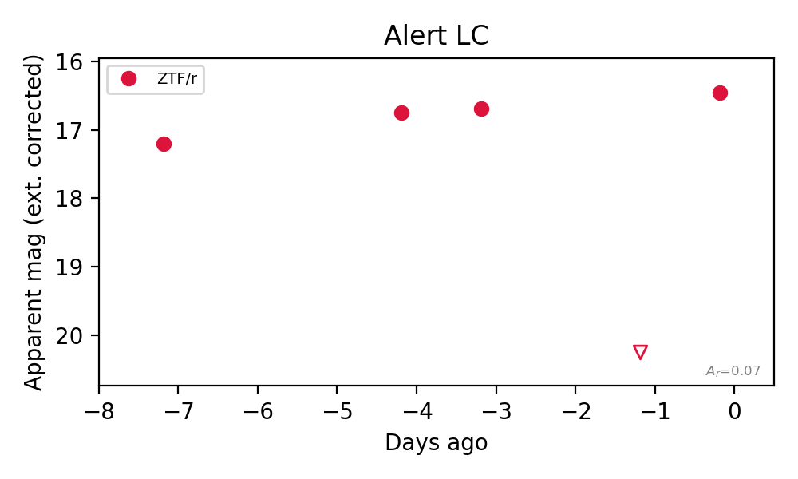
Rise Rate:
r: 3.81 mag/day
Fade Rate:
r: 1.78 mag/day
2. [ZTF] ZTF26abyovyd (FBOT?) [Back to Top] [Share] [Trigger Swift] [Fritz Alert] [Fritz Source] [Lasair]RA, Dec: 140.4168, 26.35033 9h21m40.03s, 26d21m1.18sGalactic (l, b): 201.32093, 43.5132 ext(g-r) = 0.028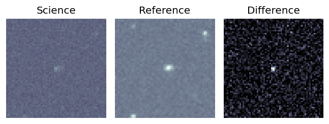
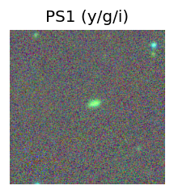
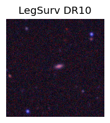
TESS: Sectors [21 44 45 46 48 72]
SDSS (<15 kpc):Found SDSS phot-z: z=0.20; peak abs mag = -20.52
PS1: 0 sources in 3 arcsec
LegacySurvey: 1 sources in 3 arcsec Closest: d = 2.85 arcsec, 289.4 deg (east of north) photoz=0.17 (68% bounds 0.15, 0.2), type=EXP peak abs mag (ext. corrected) = -20.07 (68% bounds -19.77, -20.43)
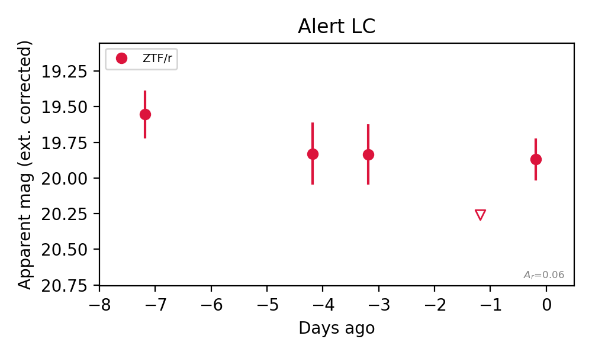
Rise Rate:
r: 0.39 mag/day
Fade Rate:
r: 0.12 mag/day
3. [ZTF] ZTF26abzhmze (FBOT?) [Back to Top] [Share] [Trigger Swift] [Fritz Alert] [Fritz Source] [Lasair]RA, Dec: 102.65162, 58.60233 6h50m36.39s, 58d36m8.40sGalactic (l, b): 157.34347, 22.80108 ext(g-r) = 0.056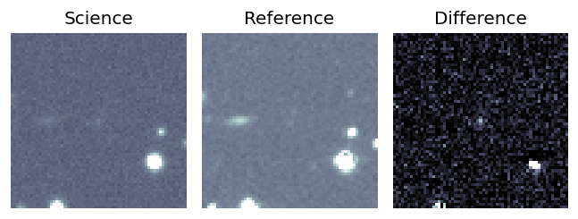
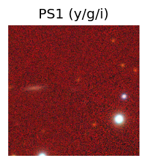
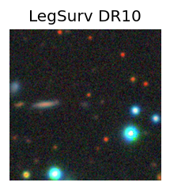
TESS: Sectors [20 60 73]
PS1: 0 sources in 3 arcsec
LegacySurvey: 1 sources in 3 arcsec Closest: d = 0.24 arcsec, 96.0 deg (east of north) photoz=0.59 (68% bounds 0.13, 0.86), type=EXP peak abs mag (ext. corrected) = -23.98 (68% bounds -20.27, -24.98)
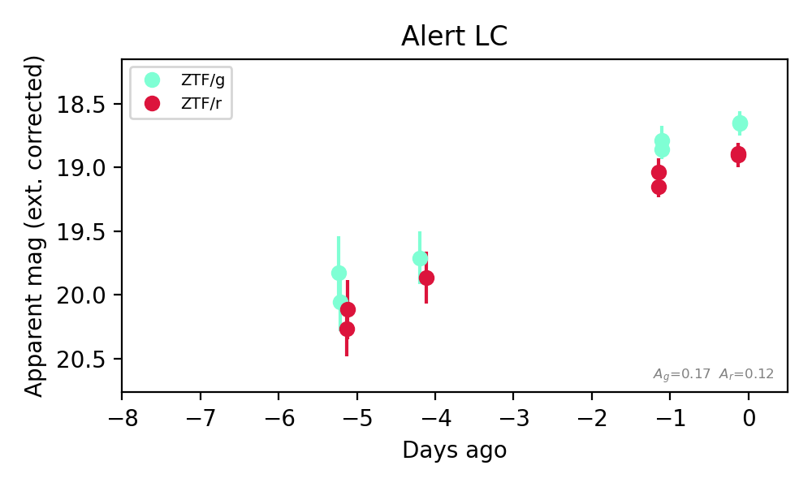
Extinction-corrected gr color:
From alerts: -0.27 +/- 0.09 mag
Rise Rate:
g: 0.28 mag/day
r: 0.27 mag/day
Fade Rate:
4. [ZTF] ZTF26abziydc (FBOT?) [Back to Top] [Share] [Trigger Swift] [Fritz Alert] [Fritz Source] [Lasair]RA, Dec: 357.91577, 32.16331 23h51m39.78s, 32d 9m47.92sGalactic (l, b): 108.47516, -29.02486 ext(g-r) = 0.049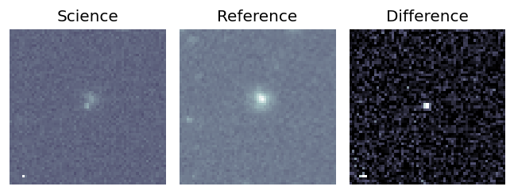
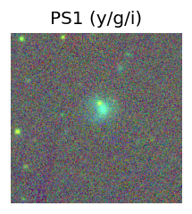
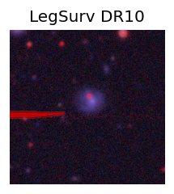
TESS: Sectors [57 84]
SDSS (<15 kpc):Found SDSS phot-z: z=0.05; peak abs mag = -17.82
PS1: 0 sources in 3 arcsec
LegacySurvey: 1 sources in 3 arcsec Closest: d = 1.01 arcsec, 162.6 deg (east of north) photoz=0.21 (68% bounds 0.09, 0.92), type=EXP peak abs mag (ext. corrected) = -21.03 (68% bounds -19.01, -24.79)
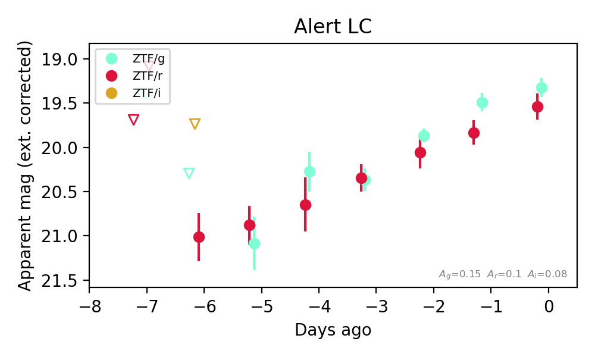
Extinction-corrected gr color:
From alerts: -0.12 +/- 0.13 mag
Extinction-corrected gi color:
From alerts: -0.38 +/- 0.17 mag
Extinction-corrected ri color:
From alerts: -0.26 +/- 0.18 mag
Consistent with synchrotron, g-r>0!
Rise Rate:
g: 0.28 mag/day
r: 0.26 mag/day
i: 0.01 mag/day
Fade Rate:
5. [ZTF] ZTF26abznbhu (FBOT?) [Back to Top] [Share] [Trigger Swift] [Fritz Alert] [Fritz Source] [Lasair]RA, Dec: 61.06203, -12.00612 4h 4m14.89s, -12d 0m-22.01sGalactic (l, b): 204.1897, -42.45825 ext(g-r) = 0.064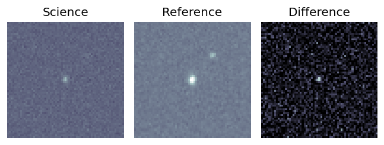
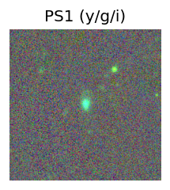
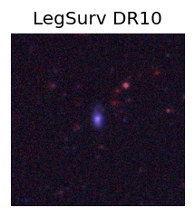
TESS: Sectors [ 5 31]
PS1: 0 sources in 3 arcsec
LegacySurvey: 1 sources in 3 arcsec Closest: d = 0.18 arcsec, 46.6 deg (east of north) photoz=0.15 (68% bounds 0.08, 0.19), type=SER peak abs mag (ext. corrected) = -19.75 (68% bounds -18.19, -20.37)
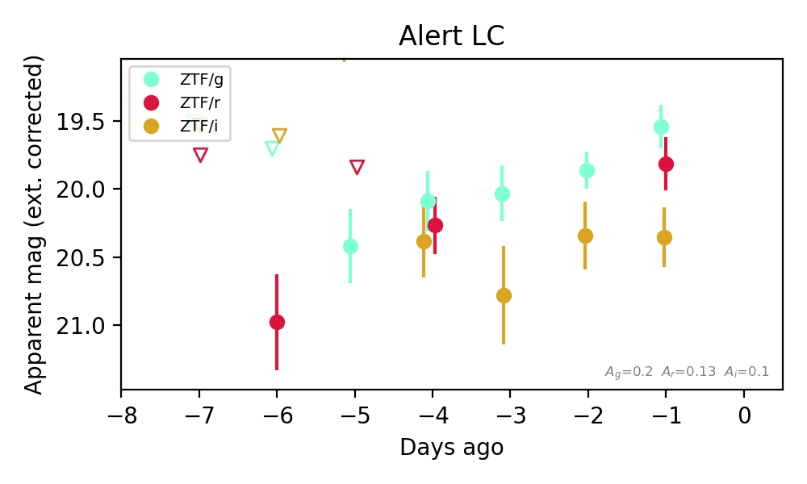
Extinction-corrected gr color:
From alerts: -0.27 +/- 0.26 mag
Extinction-corrected gi color:
From alerts: -0.81 +/- 0.28 mag
Extinction-corrected ri color:
From alerts: -0.54 +/- 0.3 mag
Rise Rate:
g: 0.2 mag/day
r: 0.2 mag/day
Fade Rate:
6. [ZTF] ZTF26abzqaqg (FBOT?) [Back to Top] [Share] [Trigger Swift] [Fritz Alert] [Fritz Source] [Lasair]RA, Dec: 353.98184, 22.85713 23h35m55.64s, 22d51m25.66sGalactic (l, b): 101.07537, -36.78909 ext(g-r) = 0.069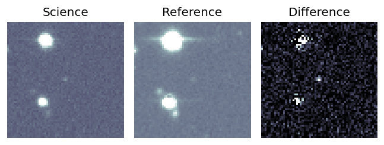
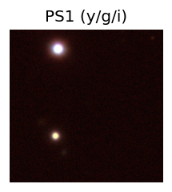
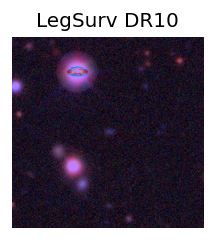
TESS: Sectors [56 83]
SDSS (<15 kpc):Found SDSS phot-z: z=0.82; peak abs mag = -23.65
PS1: 0 sources in 3 arcsec
LegacySurvey: 1 sources in 3 arcsec Closest: d = 0.76 arcsec, 266.0 deg (east of north) photoz=0.21 (68% bounds 0.15, 0.3), type=EXP peak abs mag (ext. corrected) = -20.2 (68% bounds -19.32, -21.04)
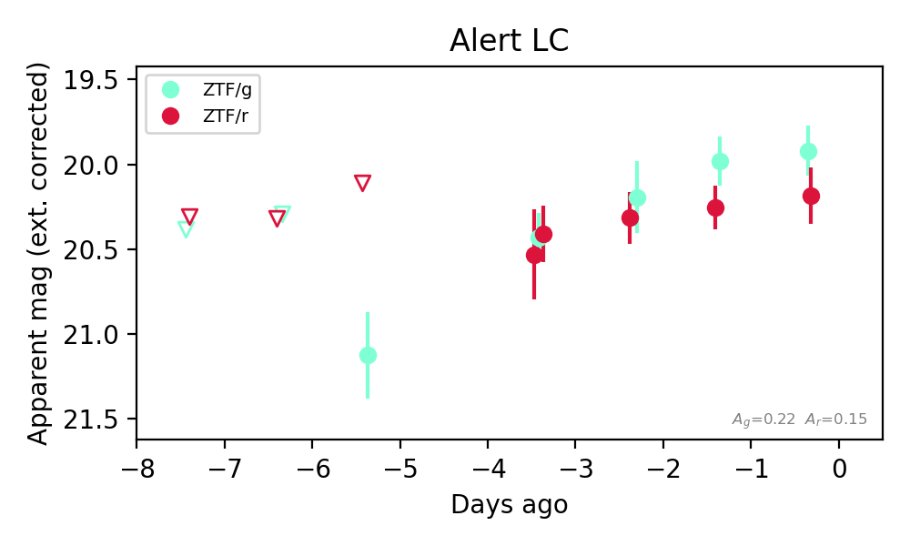
Extinction-corrected gr color:
From alerts: -0.27 +/- 0.19 mag
Rise Rate:
g: 0.27 mag/day
r: 0.02 mag/day
Fade Rate:
7. [ZTF] ZTF26abyozlk (Afterglow?) [Back to Top] [Share] [Trigger Swift] [Fritz Alert] [Fritz Source] [Lasair]RA, Dec: 259.92016, -1.89132 17h19m40.84s, -1d-53m-28.76sGalactic (l, b): 20.25717, 19.36835 ext(g-r) = 0.499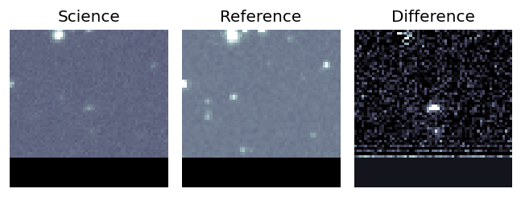
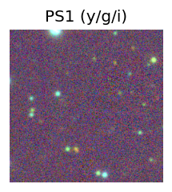

TESS: Sectors 118
PS1: 0 sources in 3 arcsec
LegacySurvey: 0 sources in 3 arcsec
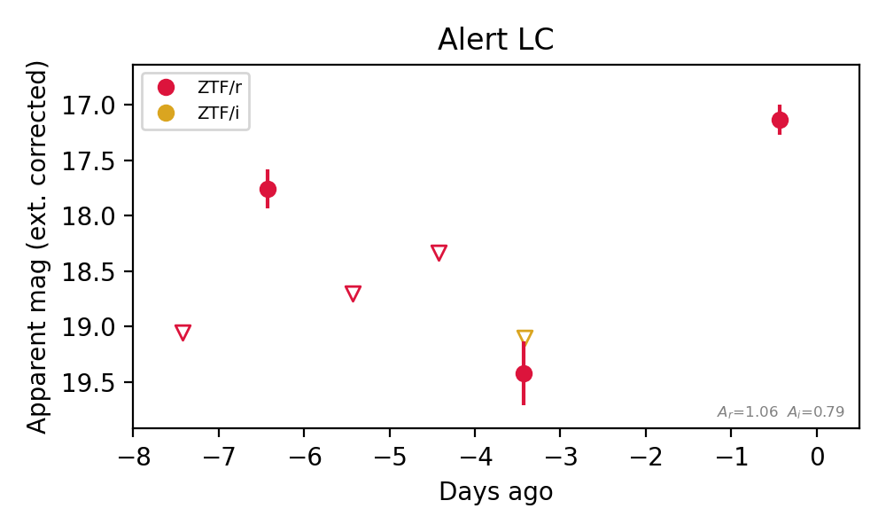
Extinction-corrected ri color:
From alerts: 0.32 +/- 99 mag
Rise Rate:
r: 1.3 mag/day
Fade Rate:
r: 0.95 mag/day
8. [ZTF] ZTF26abzhxsr (Afterglow?) [Back to Top] [Share] [Trigger Swift] [Fritz Alert] [Fritz Source] [Lasair]RA, Dec: 148.11778, 29.61537 9h52m28.27s, 29d36m55.33sGalactic (l, b): 198.43377, 50.79605 ext(g-r) = 0.019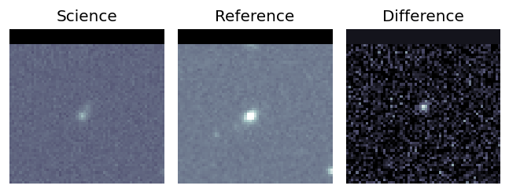
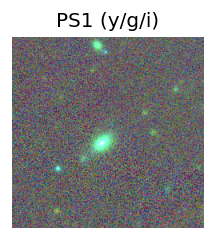
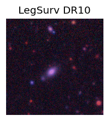
TESS: Sectors [21 48]
SDSS (<15 kpc):Found SDSS phot-z: z=0.10; peak abs mag = -18.99
PS1: 0 sources in 3 arcsec
LegacySurvey: 1 sources in 3 arcsec Closest: d = 2.71 arcsec, 2.7 deg (east of north) photoz=1.0 (68% bounds 0.7, 1.2), type=REX peak abs mag (ext. corrected) = -24.84 (68% bounds -23.89, -25.32)
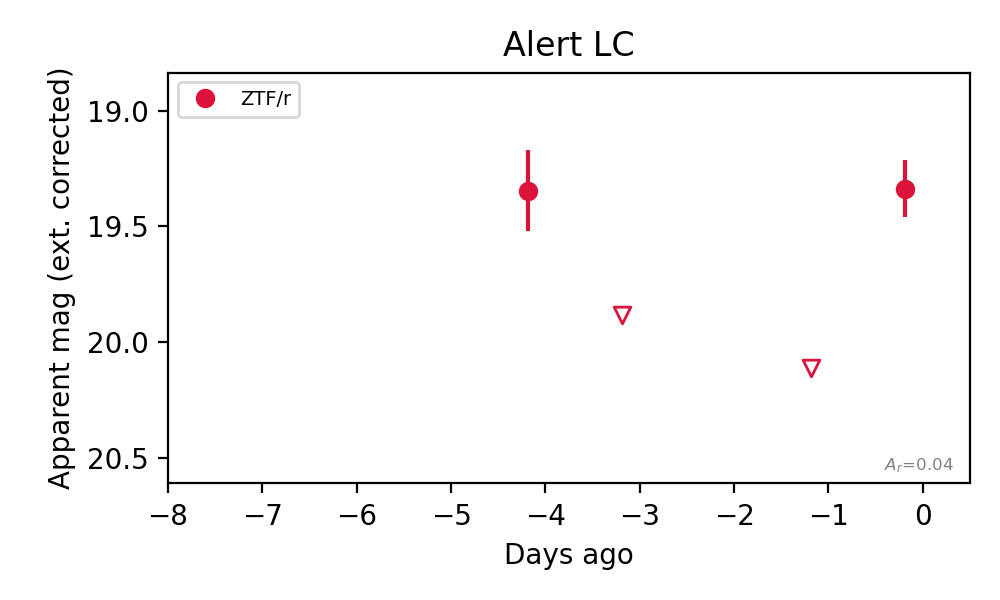
Rise Rate:
r: 0.77 mag/day
Fade Rate:
r: 0.53 mag/day
9. [ZTF] ZTF26abzwbsb (FBOT?) [Back to Top] [Share] [Trigger Swift] [Fritz Alert] [Fritz Source] [Lasair]RA, Dec: 317.57819, 9.73757 21h10m18.77s, 9d44m15.24sGalactic (l, b): 59.57804, -24.99031 ext(g-r) = 0.097


TESS: Sectors [55 82]
SDSS (<15 kpc):Found SDSS phot-z: z=0.24; peak abs mag = -20.80
PS1: 0 sources in 3 arcsec
LegacySurvey: 1 sources in 3 arcsec Closest: d = 1.73 arcsec, 13.5 deg (east of north) photoz=0.1 (68% bounds 0.07, 0.12), type=SER peak abs mag (ext. corrected) = -18.71 (68% bounds -17.97, -19.15)

Extinction-corrected gr color:
From alerts: 0.19 +/- 99 mag
Rise Rate:
g: 0.22 mag/day
Fade Rate:
10. [ZTF] ZTF26acaaayt (FBOT?) [Back to Top] [Share] [Trigger Swift] [Fritz Alert] [Fritz Source] [Lasair]RA, Dec: 77.38102, 75.74584 5h 9m31.45s, 75d44m45.04sGalactic (l, b): 136.64545, 20.34544 ext(g-r) = 0.177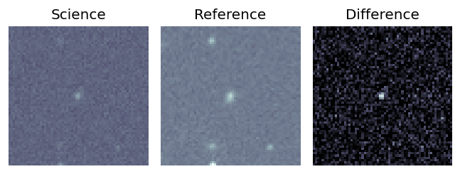
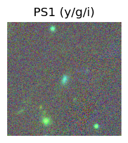
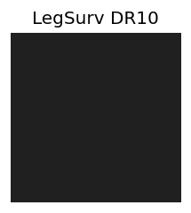
TESS: Sectors [19 25 26 52 53 59 60 73 79 86]
PS1: 1 source in 3 arcsec Closest: d = 0.69 arcsec photoz=0.12+/-0.04 peak abs mag = -19.50
LegacySurvey: 0 sources in 3 arcsec
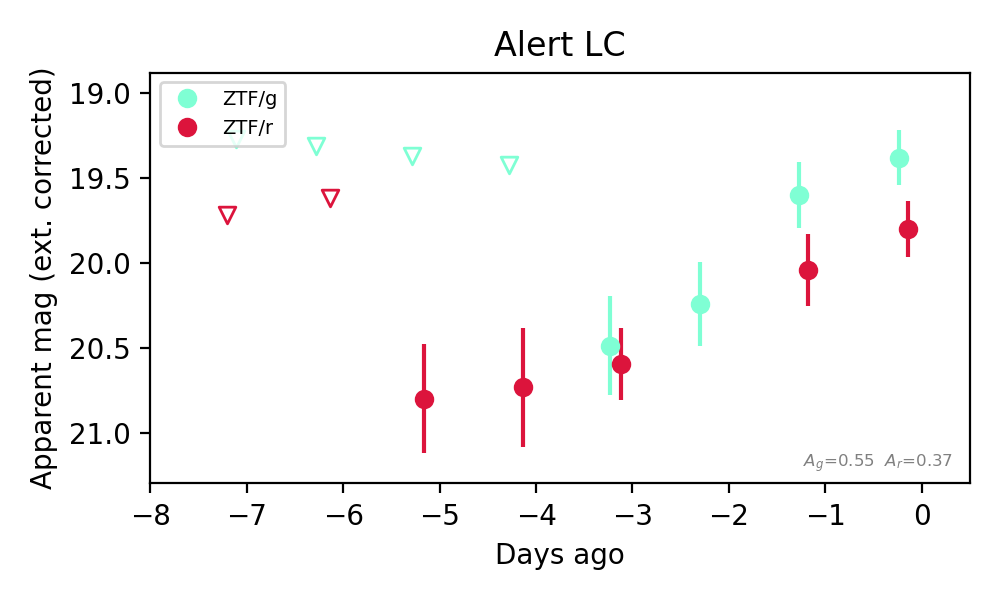
Extinction-corrected gr color:
From alerts: -0.42 +/- 0.23 mag
Rise Rate:
g: 0.39 mag/day
r: 0.22 mag/day
Fade Rate:
11. [ZTF] ZTF26acaahql (FBOT?) [Back to Top] [Share] [Trigger Swift] [Fritz Alert] [Fritz Source] [Lasair]RA, Dec: 32.48331, 10.76004 2h 9m55.99s, 10d45m36.14sGalactic (l, b): 152.22521, -47.59751 WARNING: -2.21 deg from ecliptic plane ext(g-r) = 0.107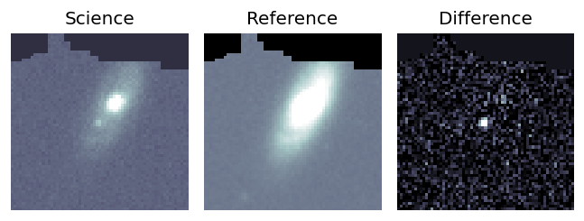
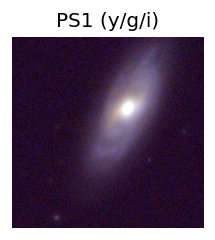
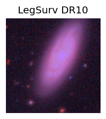
TESS: Sectors [42 43 70 71]
NED host (10 arcsec):Found UGC 01662 (G, 9.3″); NED spec-z: z=0.0229 [zflag S1L]; peak abs mag = -16.38
PS1: 0 sources in 3 arcsec
LegacySurvey: 1 sources in 3 arcsec Closest: d = 0.88 arcsec, 252.0 deg (east of north) photoz=0.21 (68% bounds 0.02, 0.79), type=PSF peak abs mag (ext. corrected) = -21.4 (68% bounds -16.5, -24.83)
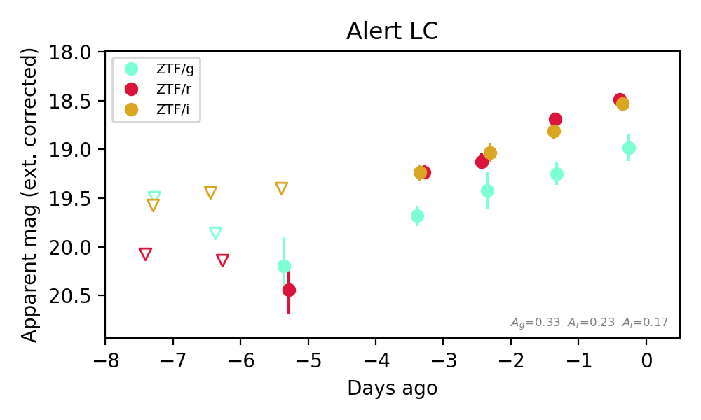
Extinction-corrected gr color:
From alerts: 0.56 +/- 0.12 mag
Extinction-corrected gi color:
From alerts: 0.44 +/- 0.14 mag
Extinction-corrected ri color:
From alerts: -0.12 +/- 0.09 mag
Consistent with synchrotron, g-r>0!
Rise Rate:
g: 0.22 mag/day
r: 0.34 mag/day
i: 0.22 mag/day
Fade Rate:
12. [ZTF] ZTF26acaggfi (FBOT?) [Back to Top] [Share] [Trigger Swift] [Fritz Alert] [Fritz Source] [Lasair]RA, Dec: 346.52915, 15.09852 23h 6m7.00s, 15d 5m54.66sGalactic (l, b): 88.57339, -40.64297 ext(g-r) = 0.15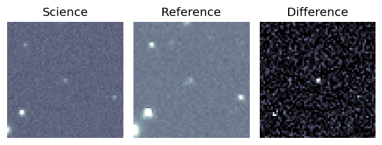
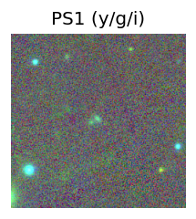
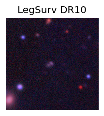
TESS: Sectors [56 83]
SDSS (<15 kpc):Found SDSS phot-z: z=0.38; peak abs mag = -21.77
PS1: 0 sources in 3 arcsec
LegacySurvey: 1 sources in 3 arcsec Closest: d = 0.74 arcsec, 72.1 deg (east of north) photoz=0.13 (68% bounds 0.07, 0.17), type=DEV peak abs mag (ext. corrected) = -19.09 (68% bounds -17.75, -19.82)
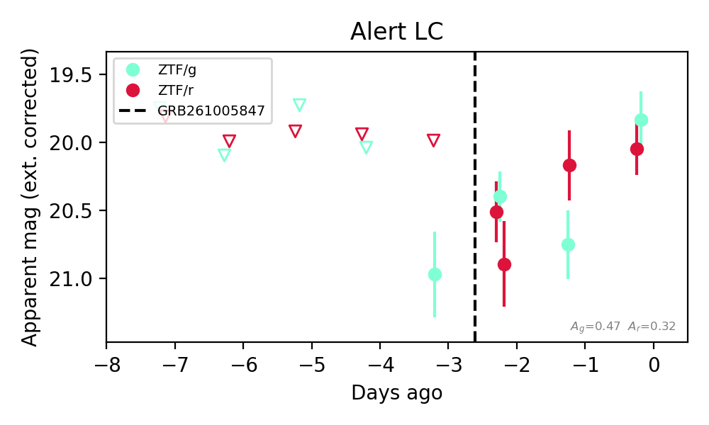
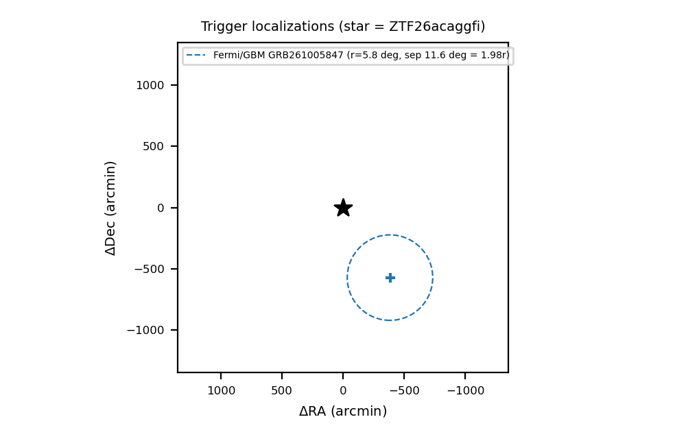
Extinction-corrected gr color:
From alerts: -0.22 +/- 0.28 mag
Consistent with synchrotron, g-r>0!
Rise Rate:
g: 0.3 mag/day
r: 0.29 mag/day
Fade Rate:
13. [ZTF] ZTF26acahfuu (Afterglow?) [Back to Top] [Share] [Trigger Swift] [Fritz Alert] [Fritz Source] [Lasair]RA, Dec: 2.11814, 54.16868 0h 8m28.35s, 54d10m7.23sGalactic (l, b): 116.60368, -8.17431 ext(g-r) = 0.408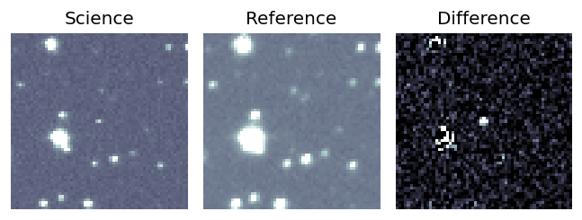
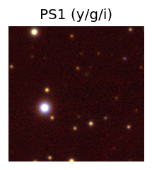

TESS: Sectors [17 24 57 84 85]
PS1: 0 sources in 3 arcsec
LegacySurvey: 0 sources in 3 arcsec
Extinction-corrected gr color:
From alerts: 1.13 +/- 99 mag
Rise Rate:
r: 1.54 mag/day
Fade Rate:
r: 0.76 mag/day
14. [ZTF] ZTF26acahuki (FBOT?) [Back to Top] [Share] [Trigger Swift] [Fritz Alert] [Fritz Source] [Lasair]RA, Dec: 359.52827, 14.2535 23h58m6.79s, 14d15m12.62sGalactic (l, b): 103.93536, -46.64197 ext(g-r) = 0.048
TESS: Sectors 83
NED host (10 arcsec):Found WISEA J235806.96+141508.2 (G, 5.1″); NED spec-z: z=0.1121 [zflag SLS]; peak abs mag = -18.50
PS1: 0 sources in 3 arcsec
LegacySurvey: 1 sources in 3 arcsec Closest: d = 0.43 arcsec, 136.7 deg (east of north) photoz=0.5 (68% bounds 0.12, 0.95), type=REX peak abs mag (ext. corrected) = -22.17 (68% bounds -18.64, -23.87)
Extinction-corrected gr color:
From alerts: 0.22 +/- 0.21 mag
Extinction-corrected gi color:
From alerts: -0.1 +/- 0.39 mag
Extinction-corrected ri color:
From alerts: 0.13 +/- 0.34 mag
Consistent with synchrotron, g-r>0!
Rise Rate:
r: 0.21 mag/day
Fade Rate:
15. [ZTF] ZTF26acahxqz (Afterglow?) [Back to Top] [Share] [Trigger Swift] [Fritz Alert] [Fritz Source] [Lasair]RA, Dec: 347.49049, 35.56161 23h 9m57.72s, 35d33m41.80sGalactic (l, b): 100.70142, -22.89166 ext(g-r) = 0.089
TESS: Sectors [16 56 83 84]
PS1: 1 source in 3 arcsec Closest: d = 6.02 arcsec photoz=0.68+/-0.83 peak abs mag = -23.28
LegacySurvey: 0 sources in 3 arcsec
Extinction-corrected gr color:
From alerts: -0.65 +/- 99 mag
Rise Rate:
g: 0.39 mag/day
Fade Rate:
g: 0.32 mag/day
16. [ZTF] ZTF26acairkr (Afterglow?) [Back to Top] [Share] [Trigger Swift] [Fritz Alert] [Fritz Source] [Lasair]RA, Dec: 6.19746, -2.99522 0h24m47.39s, -2d-59m-42.80sGalactic (l, b): 106.99749, -65.0393 ext(g-r) = 0.03
TESS: Sectors [42 43 70]
SDSS (<15 kpc):Found SDSS phot-z: z=0.04; peak abs mag = -16.56
PS1: 0 sources in 3 arcsec
LegacySurvey: 1 sources in 3 arcsec Closest: d = 5.23 arcsec, 68.6 deg (east of north) photoz=0.07 (68% bounds 0.06, 0.08), type=SER peak abs mag (ext. corrected) = -17.73 (68% bounds -17.44, -18.05)
Extinction-corrected gr color:
From alerts: 0.15 +/- 0.19 mag
Extinction-corrected gi color:
From alerts: -0.09 +/- 0.36 mag
Extinction-corrected ri color:
From alerts: 0.15 +/- 0.35 mag
Consistent with synchrotron, g-r>0!
Rise Rate:
g: 0.47 mag/day
r: 0.79 mag/day
Fade Rate:
17. [ZTF] ZTF26acakofq (Afterglow?) [Back to Top] [Share] [Trigger Swift] [Fritz Alert] [Fritz Source] [Lasair]RA, Dec: 26.37041, -3.15959 1h45m28.90s, -3d-9m-34.53sGalactic (l, b): 153.58362, -62.76978 ext(g-r) = 0.027
TESS: Sectors [ 30 97 108]
PS1: 0 sources in 3 arcsec
LegacySurvey: 1 sources in 3 arcsec Closest: d = 2.51 arcsec, 182.3 deg (east of north) photoz=0.56 (68% bounds 0.45, 0.77), type=PSF peak abs mag (ext. corrected) = -22.92 (68% bounds -22.32, -23.74)
Extinction-corrected gr color:
From alerts: 0.08 +/- 99 mag
Extinction-corrected gi color:
From alerts: 0.6 +/- 99 mag
Extinction-corrected ri color:
From alerts: 0.23 +/- 99 mag
Rise Rate:
r: 0.03 mag/day
i: 0.03 mag/day
Fade Rate:
i: 0.26 mag/day
18. [ZTF] ZTF26acalpow (FBOT?) [Back to Top] [Share] [Trigger Swift] [Fritz Alert] [Fritz Source] [Lasair]RA, Dec: 71.88225, 4.365 4h47m31.74s, 4d21m54.01sGalactic (l, b): 193.49035, -24.96351 ext(g-r) = 0.102
TESS: Sectors 110
PS1: 0 sources in 3 arcsec
LegacySurvey: 1 sources in 3 arcsec Closest: d = 0.22 arcsec, 128.3 deg (east of north) photoz=0.16 (68% bounds 0.1, 0.25), type=EXP peak abs mag (ext. corrected) = -19.64 (68% bounds -18.62, -20.72)
Extinction-corrected gi color:
From alerts: -0.52 +/- 0.37 mag
Rise Rate:
g: 0.43 mag/day
Fade Rate:
19. [ZTF] ZTF26acaorbx (Afterglow?) [Back to Top] [Share] [Trigger Swift] [Fritz Alert] [Fritz Source] [Lasair]RA, Dec: 98.3834, 24.3722 6h33m32.02s, 24d22m19.91sGalactic (l, b): 189.17645, 7.17498 WARNING: 1.15 deg from ecliptic plane ext(g-r) = 0.299
TESS: Sectors [43 44 45 71 72]
NED photo-z only: WISEA J063332.07+242224.9 (G, 5.1″) z=0.0447 [zflag PUN] — not used for peak abs mag
PS1: 1 source in 3 arcsec Closest: d = 4.85 arcsec photoz=0.05+/-0.01 peak abs mag = -17.21
LegacySurvey: 0 sources in 3 arcsec
Extinction-corrected gr color:
From alerts: -0.06 +/- 0.19 mag
Extinction-corrected gi color:
From alerts: -0.22 +/- 0.26 mag
Extinction-corrected ri color:
From alerts: -0.16 +/- 0.21 mag
Consistent with synchrotron, g-r>0!
Rise Rate:
g: 0.85 mag/day
r: 0.42 mag/day
Fade Rate: